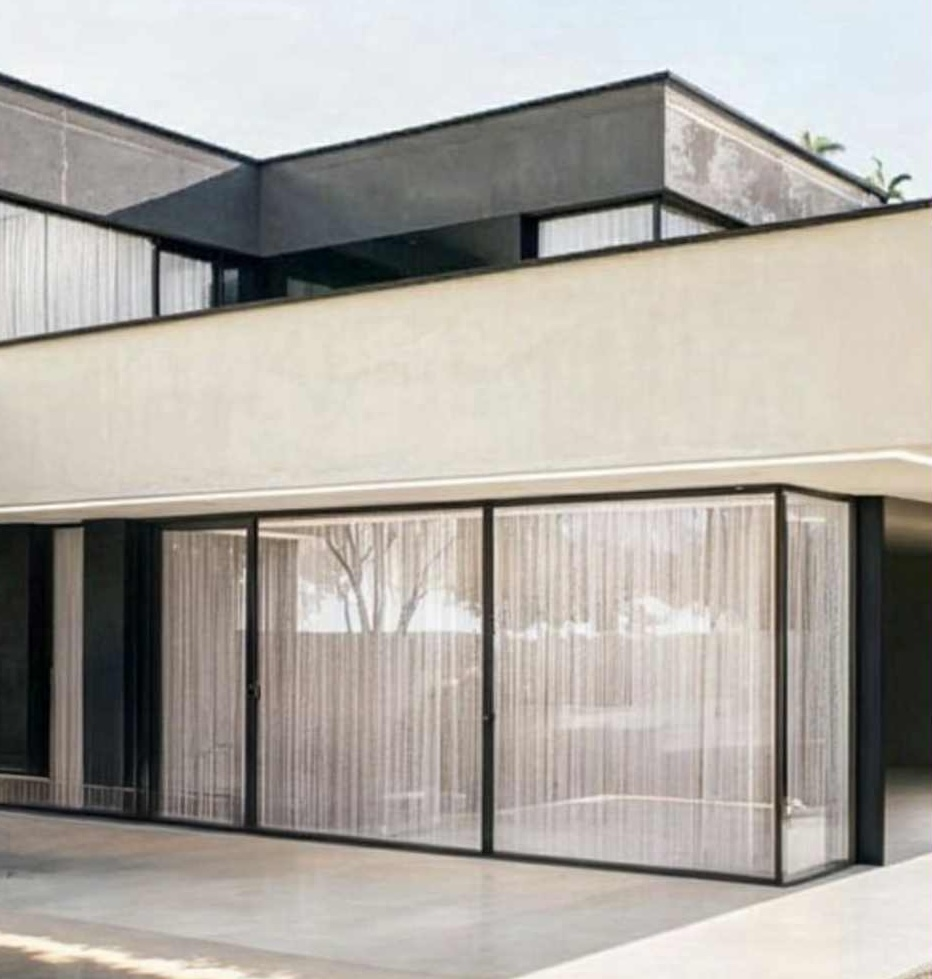
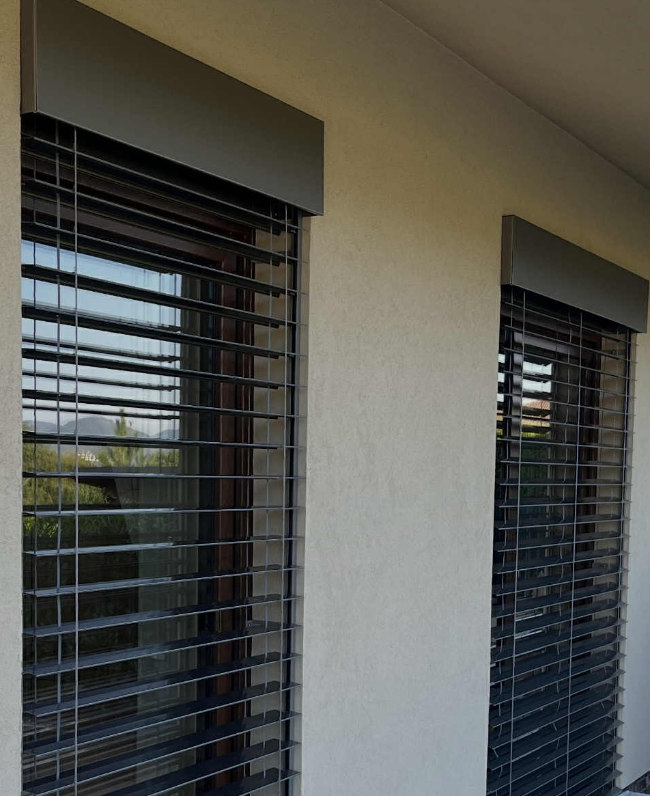

Ponúkame komplexné riešenia v oblasti tieniacej techniky a stavebných výplní na mieru. Zameriavame sa na kvalitu, funkčnosť a estetiku, ktoré vám prinesú vyšší komfort bývania, súkromie a úsporu energií. Sme spoľahlivým partnerom pre okná, dvere, vonkajšie žalúzie a rolety. Od odborného poradenstva a presného zamerania až po profesionálnu montáž a servis – všetko zabezpečíme pod jednou strechou. Naše riešenia chránia váš domov a zároveň podčiarkujú jeho vzhľad.
Ponúkame kvalitné plastové a hliníkové okná a dvere s vynikajúcimi izolačnými vlastnosťami, dlhou životnosťou a minimálnymi nárokmi na údržbu. Vďaka moderným technológiám si môžete užívať tichý, teplý a bezpečný domov, pričom zároveň znižujete svoje prevádzkové náklady a chránite životné prostredie.

Naše vonkajšie žalúzie predstavujú moderný a účinný spôsob regulácie svetla a tepla v interiéri. Vďaka kvalitným materiálom a precíznemu spracovaniu chránia priestory pred prehrievaním v letných mesiacoch a pomáhajú znižovať tepelné straty v zime. Získate tak príjemnú vnútornú klímu a vyššie súkromie počas celého roka.

Moderný základ pre váš komfort a úspory. Ponúkame kvalitné plastové okná s výbornými izolačnými vlastnosťami, dlhou životnosťou a minimálnymi nárokmi na údržbu. Užite si ticho, teplo a bezpečný domov s našimi riešeniami, ktoré šetria vaše náklady aj životné prostredie.
Moderné žalúzie umožňujú reguláciu svetla, tepelnú izoláciu a ochranu pred prehrievaním. Zabezpečujú optimálnu klímu a súkromie počas celého roka.